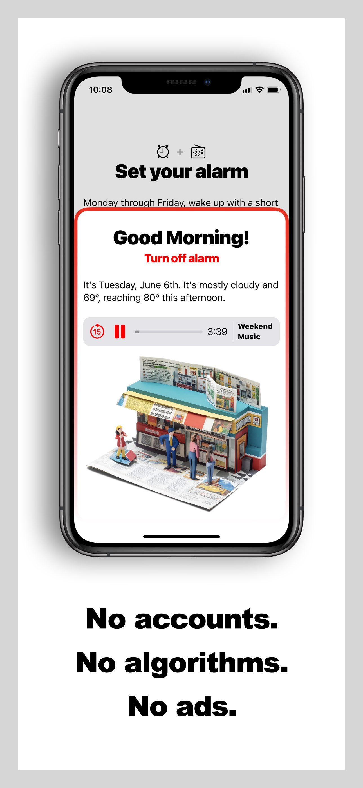
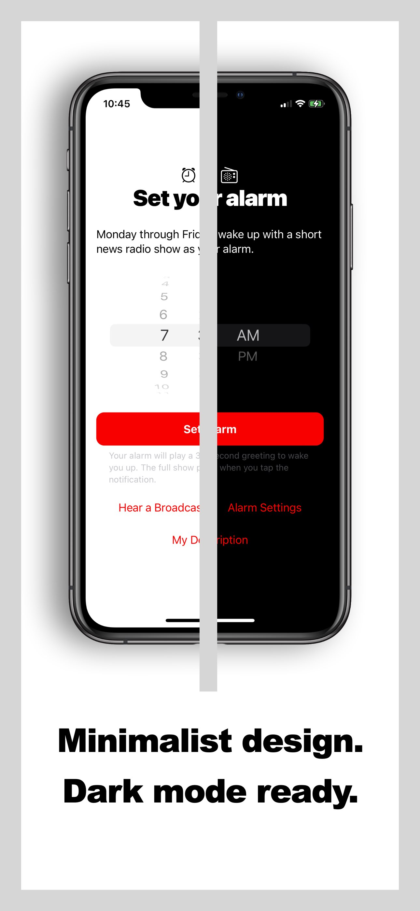
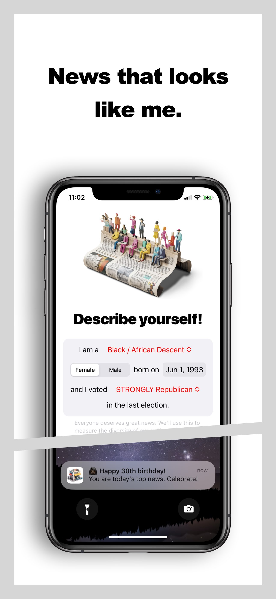
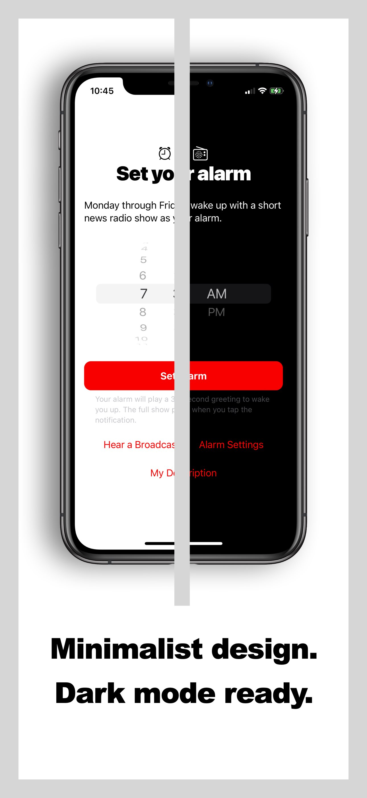
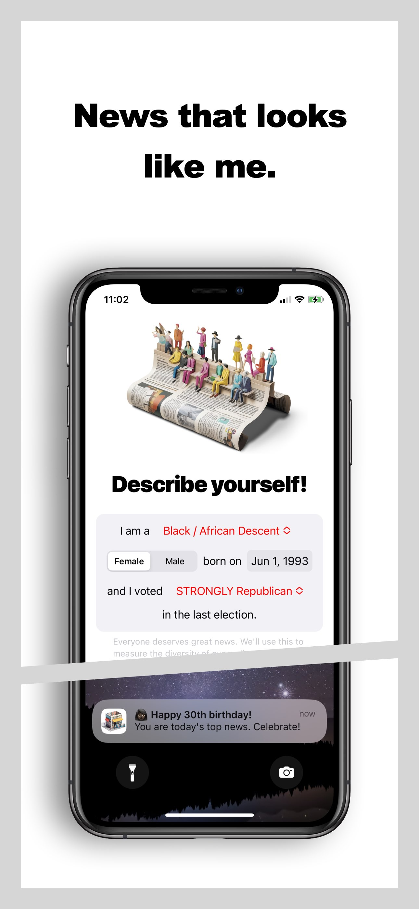
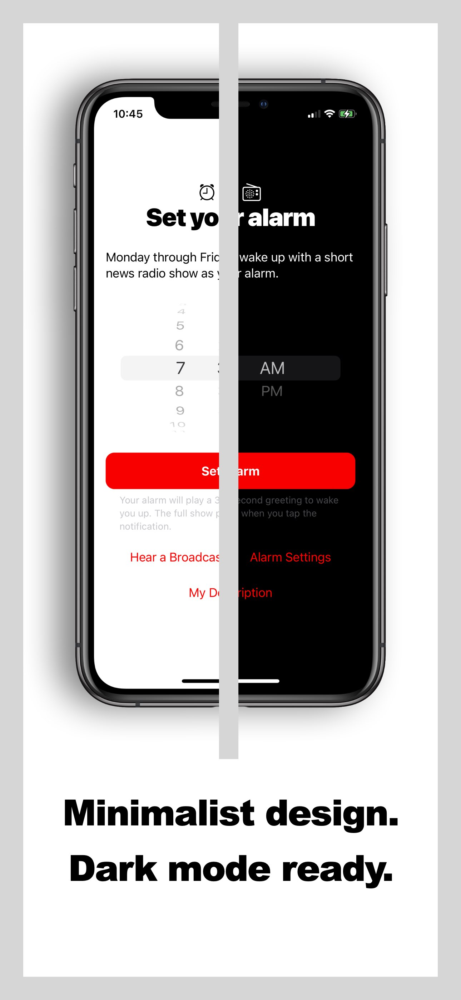
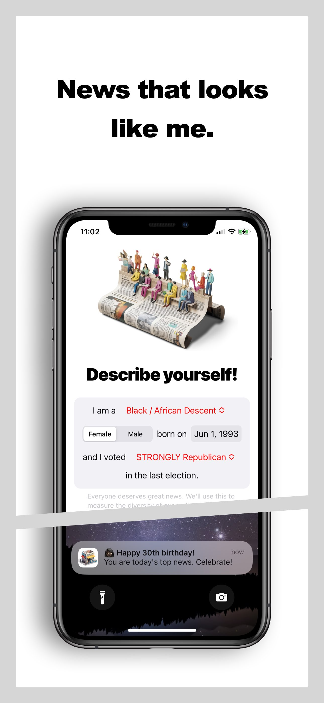

Current Project
West News | See on App Store

 





A news podcast alarm clock featuring an in-house news broadcast every Monday through Friday. Featuring SwiftUI, WeatherKit, CoreLocation, AVFoundation, and Heroku / AWS S3. Dark Mode supported.